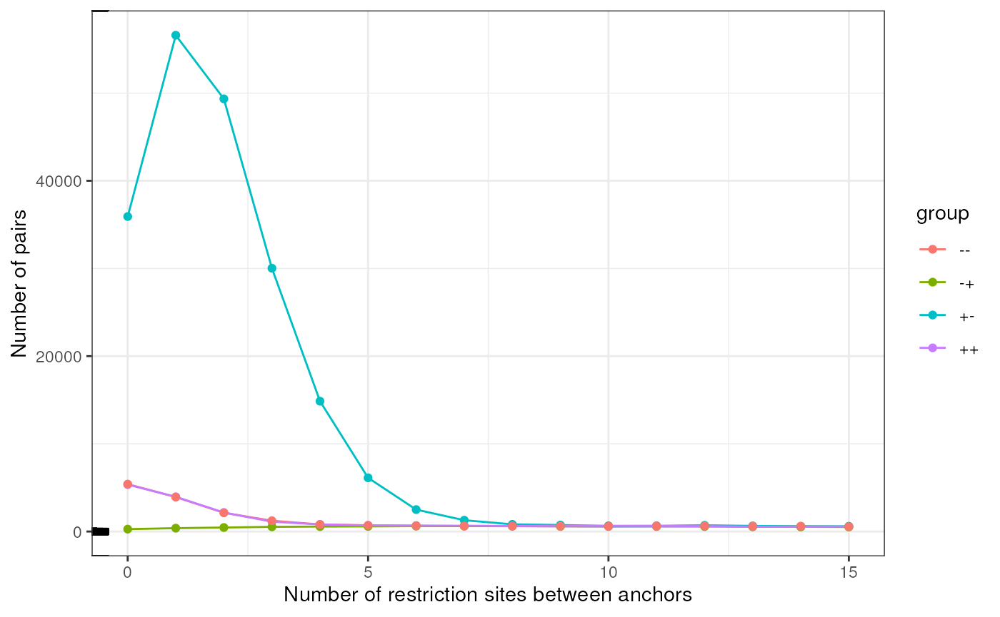

Hi-C arithmetic with plyinteractions
9 October 2023
Source:vignettes/process_pairs.Rmd
process_pairs.RmdThe plyinteractions
package facilitates data aggregation, for up to hundreds of thousands
and even millions of genomic interactions. In this vignette, we explore
several use cases which can arise when exploring Hi-C data stored in
pairs files.
We will use a real-life pairs file provided by the
4DN Consortium. This file has been generated from
processing Hi-C performed in mouse from brain cell primary culture
during neural development (Bonev et al., Cell 2017). Pairs have been
filtered to only those mapped over chr13.
library(tidyverse)
#> ── Attaching core tidyverse packages ─────────────────────────────────────────────────────────────────────────────────────────────────────────────────────────────────────────────────────────────────────────────────────────────────────────────────────────────────────────────────────────────────────────────────────────────────────────────────────────────────────────────────────────────────────────────────────────────────────────────────────────────────────────────────────────────────────────────────────────────────────────────────────────────────────────────────────────────────────────────────────────────────────────────────────────────────────────────────────────────────────────────────────────────────────────────────────────────────────────────────────────────────────────────────────────────────────────────────────────────────────────────────────────────────────────────────────────────────────────────────────────────────────────────────────────────────────────────────────────────────────────────────────────────────────────────────────────────────────────────────────────────────────────────────────────────────────────────────────────────────────────────────────────────────────────────────────────────────────────────────────────────────────────────────────────────────────────────────────────────────────────────────────────────────────────────────────────────────────────────────────────────────────────────────────────────────────────────────────────────────────────────────────────────────────────────────────────────────────────────────────────────────────────────────────────────────────────────────────────────────────────────────────────────────────────────────────────────────────────────────────────────────────────────────────────────────────────────────────────────────────────────────────────────────────────────────────────────────────────────────────────────────────────────────────────────────────────────────────────────────────────────────────────────────────────────────────────────────────────────────────────────────────────────────────────────────────────────────────────────────────────────────────────────────────────────────────────────────────────────────────────────────────────────────────────────────────────────────────────────────────────────────────────────────────────────────────────────────────────────────────────────────────────────────────────────────────────────────────────────────────────────────────────────────────────────────────────────────────────────────────────────────────────────────────────────────────────────────────────────────────────────────────────────────────────────────────────────────────────────────────────────────────────────────────────────────────────────────────────────────────────────────────────────────────────────────────────────────────────────────────────────────────────────────────────────────────────────────────────────────────────────────────────────────────────────────────────────────────────────────────────────────────────────────────────────────────────────────────────────────────────────────────────────────────────────────────────────────────────────────────────────────────────────────────────────────────────────────────────────────────────────────────────────────────────────────────────────────────────────────────────────────────────────────────────────────────────────────────────────────────────────────────────────────────────────────────────────────────────────────────────────────────────────────────────────────────────────────────────────────────────────────────────────────────────────────────────────────────────────────────────────────────────────────────────────────────────────────────────────────────────────────────────────────────────────────────────────────────────────────────────────────────────────────────────────────────────────────────────────────────────────────────────────────────────────────────────────────────────────────────────────────────────────────────────────────────────────────────────────────────────────────────────────────────────────────────────────────────────────────────────────────────────────────────────────────────────────────────────────────────────────────────────────────────────────────────────────────────────────────────────────────────────────────────────────────────────────────────────────────────────────────────────────────────────────────────────────────────────────────────────────────────────────────────────────────────────────────────────────────────────────────────────────────────────────────────────────────────────────────────────────────────────────────────────────────────────────────────────────────────────────────────────────────────────────────────────────────────────────────────────────────────────────────────────────────────────────────────────────────────────────────────────────────────────────────────────────────────────────────────────────────────────────────────────────────────────────────────────────────────────────────────────────────────────────────────────────────────────────────────────────────────────────────────────────────────────────────────────────────────────────────────────────────────────────────────────────────────────────────────────────────────────────────────────────────────────────────────────────────────────────────────────────────────────────────────────────────────────────────────────────────────────────────────────────────────────────────────────────────────────────────────────────────────────────────────────────────────────────────────────────────────────────────────────────────────────────────────────────────────────────────────────────────────────────────────────────────────────────────────────────────────────────────────────────────────────────────────────────────────────────────────────────────────────────────────────────────────────────────────────────────────────────────────────────────────────────────────────────────────────────────────────────────────────────────────────────────────────────────────────────────────────────────────────────────────────────────────────────────────────────────────────────────────────────────────────────────────────────────────────────────────────────────────────────────────────────────────────────────────────────────────────────────────────────────────────────────────────────────────────────────────────────────────────────────────────────────────────────────────────────────────────────────────────────────────────────────────────────────────────────────────────────────────────────────────────────────────────────────────────────────────────────────────────────────────────────────────────────────────────────────────────────────────────────────────────────────────────────────────────────────────────────────────────────────────────────────────────────────────────────────────────────────────────────────────────────────────────────────────────────────────────────────────────────────────────────────────────────────────────────────────────────────────────────────────────────────────────────────────────────────────────────────────────────────────────────────────────────────────────────────────────────────────────────────────────────────────────────────────────────────────────────────────────────────────────────────────────────────────────────────────────────────────────────────────────────────────────────────────────────────────────────────────────────────────────────────────────────────────────────────────────────────────────────────────────────────────────────────────────────────────────────────────────────────────────────────────────────────────────────────────────────────────────────────────────────────────────────────────────────────────────────────────────────────────────────────────────────────────────────────────────────────────────────────────────────────────────────────────────────────────────────────────────────────────────────────────────────────────────────────────────────────────────────────────────────────────────────────────────────────────────────────────────────────────────────────────────────────────────────────────────────────────────────────────────────────────────────────────────────────────────────────────────────────────────────────────────────────────────────────────────────────────────────────────────────────────────────────────────────────────────────────────────────────────────────────────────────────────────────────────────────────────────────────────────────────────────────────────────────────────────────────────────────────────────────────────────────────────────────────────────────────────────────────────────────────────────────────────────────────────────────────────────────────────────────────────────────────────────────────────────────────────────────────────────────────────────────────────────────────────────────────────────────────────────────────────────────────────────────────────────────────────────────────────────────────────────────────────────────────────────────────────────────────────────────────────────────────────────────────────────────────────────────────────────────────────────────────────────────────────────────────────────────────────────────────────────────────────────────────────────────────────────────────────────────────────────────────────────────────────────────────────────────────────────────────────────────────────────────────────────────────────────────────────────────────────────────────────────────────────────────────────────────────────────────────────────────────────────────────────────────────────────────────────────────────────────────────────────────────────────────────────────────────────────────────────────────────────────────────────────────────────────────────────────────────────────────────────────────────────────────────────────────────────────────────────────────────────────────────────────────────────────────────────────────────────────────────────────────────────── tidyverse 2.0.0 ──
#> ✔ dplyr 1.1.3 ✔ readr 2.1.4
#> ✔ forcats 1.0.0 ✔ stringr 1.5.0
#> ✔ ggplot2 3.4.3 ✔ tibble 3.2.1
#> ✔ lubridate 1.9.3 ✔ tidyr 1.3.0
#> ✔ purrr 1.0.2
#> ── Conflicts ───────────────────────────────────────────────────────────────────────────────────────────────────────────────────────────────────────────────────────────────────────────────────────────────────────────────────────────────────────────────────────────────────────────────────────────────────────────────────────────────────────────────────────────────────────────────────────────────────────────────────────────────────────────────────────────────────────────────────────────────────────────────────────────────────────────────────────────────────────────────────────────────────────────────────────────────────────────────────────────────────────────────────────────────────────────────────────────────────────────────────────────────────────────────────────────────────────────────────────────────────────────────────────────────────────────────────────────────────────────────────────────────────────────────────────────────────────────────────────────────────────────────────────────────────────────────────────────────────────────────────────────────────────────────────────────────────────────────────────────────────────────────────────────────────────────────────────────────────────────────────────────────────────────────────────────────────────────────────────────────────────────────────────────────────────────────────────────────────────────────────────────────────────────────────────────────────────────────────────────────────────────────────────────────────────────────────────────────────────────────────────────────────────────────────────────────────────────────────────────────────────────────────────────────────────────────────────────────────────────────────────────────────────────────────────────────────────────────────────────────────────────────────────────────────────────────────────────────────────────────────────────────────────────────────────────────────────────────────────────────────────────────────────────────────────────────────────────────────────────────────────────────────────────────────────────────────────────────────────────────────────────────────────────────────────────────────────────────────────────────────────────────────────────────────────────────────────────────────────────────────────────────────────────────────────────────────────────────────────────────────────────────────────────────────────────────────────────────────────────────────────────────────────────────────────────────────────────────────────────────────────────────────────────────────────────────────────────────────────────────────────────────────────────────────────────────────────────────────────────────────────────────────────────────────────────────────────────────────────────────────────────────────────────────────────────────────────────────────────────────────────────────────────────────────────────────────────────────────────────────────────────────────────────────────────────────────────────────────────────────────────────────────────────────────────────────────────────────────────────────────────────────────────────────────────────────────────────────────────────────────────────────────────────────────────────────────────────────────────────────────────────────────────────────────────────────────────────────────────────────────────────────────────────────────────────────────────────────────────────────────────────────────────────────────────────────────────────────────────────────────────────────────────────────────────────────────────────────────────────────────────────────────────────────────────────────────────────────────────────────────────────────────────────────────────────────────────────────────────────────────────────────────────────────────────────────────────────────────────────────────────────────────────────────────────────────────────────────────────────────────────────────────────────────────────────────────────────────────────────────────────────────────────────────────────────────────────────────────────────────────────────────────────────────────────────────────────────────────────────────────────────────────────────────────────────────────────────────────────────────────────────────────────────────────────────────────────────────────────────────────────────────────────────────────────────────────────────────────────────────────────────────────────────────────────────────────────────────────────────────────────────────────────────────────────────────────────────────────────────────────────────────────────────────────────────────────────────────────────────────────────────────────────────────────────────────────────────────────────────────────────────────────────────────────────────────────────────────────────────────────────────────────────────────────────────────────────────────────────────────────────────────────────────────────────────────────────────────────────────────────────────────────────────────────────────────────────────────────────────────────────────────────────────────────────────────────────────────────────────────────────────────────────────────────────────────────────────────────────────────────────────────────────────────────────────────────────────────────────────────────────────────────────────────────────────────────────────────────────────────────────────────────────────────────────────────────────────────────────────────────────────────────────────────────────────────────────────────────────────────────────────────────────────────────────────────────────────────────────────────────────────────────────────────────────────────────────────────────────────────────────────────────────────────────────────────────────────────────────────────────────────────────────────────────────────────────────────────────────────────────────────────────────────────────────────────────────────────────────────────────────────────────────────────────────────────────────────────────────────────────────────────────────────────────────────────────────────────────────────────────────────────────────────────────────────────────────────────────────────────────────────────────────────────────────────────────────────────────────────────────────────────────────────────────────────────────────────────────────────────────────────────────────────────────────────────────────────────────────────────────────────────────────────────────────────────────────────────────────────────────────────────────────────────────────────────────────────────────────────────────────────────────────────────────────────────────────────────────────────────────────────────────────────────────────────────────────────────────────────────────────────────────────────────────────────────────────────────────────────────────────────────────────────────────────────────────────────────────────────────────────────────────────────────────────────────────────────────────────────────────────────────────────────────────────────────────────────────────────────────────────────────────────────────────────────────────────────────────────────────────────────────────────────────────────────────────────────────────────────────────────────────────────────────────────────────────────────────────────────────────────────────────────────────────────────────────────────────────────────────────────────────────────────────────────────────────────────────────────────────────────────────────────────────────────────────────────────────────────────────────────────────────────────────────────────────────────────────────────────────────────────────────────────────────────────────────────────────────────────────────────────────────────────────────────────────────────────────────────────────────────────────────────────────────────────────────────────────────────────────────────────────────────────────────────────────────────────────────────────────────────────────────────────────────────────────────────────────────────────────────────────────────────────────────────────────────────────────────────────────────────────────────────────────────────────────────────────────────────────────────────────────────────────────────────────────────────────────────────────────────────────────────────────────────────────────────────────────────────────────────────────────────────────────────────────────────────────────────────────────────────────────────────────────────────────────────────────────────────────────────────────────────────────────────────────────────────────────────────────────────────────────────────────────────────────────────────────────────────────────────────────────────────────────────────────────────────────────────────────────────────────────────────────────────────────────────────────────────────────────────────────────────────────────────────────────────────────────────────────────────────────────────────────────────────────────────────────────────────────────────────────────────────────────────────────────────────────────────────────────────────────────────────────────────────────────────────────────────────────────────────────────────────────────────────────────────────────────────────────────────────────────────────────────────────────────────────────────────────────────────────────────────────────────────────────────────────────────────────────────────────────────────────────────────────────────────────────────────────────────────────────────────────────────────────────────────────────────────────────────────────────────────────────────────────────────────────────────────────────────────────────────────────────────────────────────────────────────────────────────────────────────────────────────────────────────────────────────────────────────────────────────────────────────────────────────────────────────────────────────────────────────────────────────────────────────────────────────────────────────────────────────────────────────────────────────────────────────────────────────────────────────────────────────────────── tidyverse_conflicts() ──
#> ✖ dplyr::filter() masks stats::filter()
#> ✖ dplyr::lag() masks stats::lag()
#> ℹ Use the conflicted package (<http://conflicted.r-lib.org/>) to force all conflicts to become errors
library(plyinteractions)
#>
#> Attaching package: 'plyinteractions'
#>
#> The following object is masked from 'package:ggplot2':
#>
#> annotate
#>
#> The following object is masked from 'package:stats':
#>
#> filter
## Importing it in R
pairs_file <- HiContactsData::HiContactsData('mESCs', 'pairs.gz')
#> see ?HiContactsData and browseVignettes('HiContactsData') for documentation
#> loading from cache
pairs_df <- read.delim(
pairs_file, sep = "\t", header = FALSE, comment.char = "#"
) |>
set_names(c(
"ID", "seqnames1", "start1",
"seqnames2", "start2", "strand1", "strand2"
))
pairs <- as_ginteractions(
pairs_df, end1 = start1, end2 = start2, keep.extra.columns = TRUE
)
pairs
#> GInteractions object with 5150011 interactions and 1 metadata column:
#> seqnames1 ranges1 strand1 seqnames2 ranges2 strand2 | ID
#> <Rle> <IRanges> <Rle> <Rle> <IRanges> <Rle> | <character>
#> [1] chr13 17057558 + --- chr13 17176616 - | SRR5339749.58
#> [2] chr13 68759440 - --- chr13 113578864 - | SRR5339749.105
#> [3] chr13 47940999 + --- chr13 48134537 + | SRR5339749.169
#> [4] chr13 80638451 + --- chr13 80638826 - | SRR5339749.170
#> [5] chr13 4362498 - --- chr13 96982617 + | SRR5339749.249
#> ... ... ... ... ... ... ... ... . ...
#> [5150007] chr13 95480277 - --- chr13 96105587 + | SRR5339749.237063036
#> [5150008] chr13 55523047 + --- chr13 55523339 - | SRR5339749.237063218
#> [5150009] chr13 88318766 - --- chr13 89456475 + | SRR5339749.237063267
#> [5150010] chr13 69859492 + --- chr13 69859712 - | SRR5339749.237063274
#> [5150011] chr13 18990870 + --- chr13 19369755 - | SRR5339749.237063301
#> -------
#> regions: 9013760 ranges and 0 metadata columns
#> seqinfo: 1 sequence from an unspecified genome; no seqlengthsEstimating pairs filtering thresholds
We can first in silico digest the mouse genome to obtain the coordinates of each genomic fragment after digestion by DpnII and HinfI.
## Prepare DpnII/HinfI-digested genomic fragments
library(GenomicRanges)
#> Loading required package: stats4
#> Loading required package: S4Vectors
#>
#> Attaching package: 'S4Vectors'
#> The following object is masked from 'package:plyinteractions':
#>
#> rename
#> The following objects are masked from 'package:lubridate':
#>
#> second, second<-
#> The following objects are masked from 'package:dplyr':
#>
#> first, rename
#> The following object is masked from 'package:tidyr':
#>
#> expand
#> The following object is masked from 'package:utils':
#>
#> findMatches
#> The following objects are masked from 'package:base':
#>
#> expand.grid, I, unname
#> Loading required package: IRanges
#>
#> Attaching package: 'IRanges'
#> The following object is masked from 'package:plyinteractions':
#>
#> slice
#> The following object is masked from 'package:lubridate':
#>
#> %within%
#> The following objects are masked from 'package:dplyr':
#>
#> collapse, desc, slice
#> The following object is masked from 'package:purrr':
#>
#> reduce
#> Loading required package: GenomeInfoDb
library(Biostrings)
#> Loading required package: XVector
#>
#> Attaching package: 'XVector'
#> The following object is masked from 'package:purrr':
#>
#> compact
#>
#> Attaching package: 'Biostrings'
#> The following object is masked from 'package:base':
#>
#> strsplit
library(plyranges)
#>
#> Attaching package: 'plyranges'
#> The following object is masked from 'package:XVector':
#>
#> slice
#> The following object is masked from 'package:IRanges':
#>
#> slice
#> The following objects are masked from 'package:plyinteractions':
#>
#> flank_downstream, flank_left, flank_right, flank_upstream, shift_downstream, shift_left, shift_right, shift_upstream
#> The following objects are masked from 'package:dplyr':
#>
#> between, n, n_distinct
#> The following object is masked from 'package:stats':
#>
#> filter
genome <- BSgenome.Mmusculus.UCSC.mm10::BSgenome.Mmusculus.UCSC.mm10
cutter <- DNAStringSet(c("GATC", "GANTC")) ## DpnII/HinfI cutting site
fragments <- BiocParallel::bplapply(BPPARAM = BiocParallel::MulticoreParam(workers = 8),
names(genome), function(.x) {
seq <- genome[[.x]]
mids <- lapply(
cutter,
function(cutsite) {
hits <- matchPattern(cutsite, seq, fixed = "subject")
start(hits) + {end(hits) - start(hits)}
}
) |> unlist() |> sort()
GRanges(seqnames = .x, IRanges(
start = c(1, mids), end = c(mids-1, length(seq))
))
}
) |>
set_names(names(genome)) |>
GRangesList() |>
unlist()
fragments$binID <- seq_along(fragments)We can then use the annotate() function from plyinteractions
to recover, for each interaction, which restriction enzyme fragment each
anchor overlaps with, and how many restriction enzyme cutting sites are
found between them.
## Annotate for each anchor set which genomic fragment it overlaps with
annotated_pairs <- pairs |>
plyinteractions::annotate(fragments, by = "binID") |>
mutate(n_fragments = binID.2 - binID.1, group = paste0(strand1, strand2))
annotated_pairs
#> GInteractions object with 5150011 interactions and 5 metadata columns:
#> seqnames1 ranges1 strand1 seqnames2 ranges2 strand2 | ID binID.1 binID.2 n_fragments group
#> <Rle> <IRanges> <Rle> <Rle> <IRanges> <Rle> | <character> <integer> <integer> <integer> <character>
#> [1] chr13 17057558 + --- chr13 17176616 - | SRR5339749.58 9591352 9592012 660 +-
#> [2] chr13 68759440 - --- chr13 113578864 - | SRR5339749.105 9880169 10124404 244235 --
#> [3] chr13 47940999 + --- chr13 48134537 + | SRR5339749.169 9762274 9763393 1119 ++
#> [4] chr13 80638451 + --- chr13 80638826 - | SRR5339749.170 9946878 9946878 0 +-
#> [5] chr13 4362498 - --- chr13 96982617 + | SRR5339749.249 9521271 10034142 512871 -+
#> ... ... ... ... ... ... ... ... . ... ... ... ... ...
#> [5150007] chr13 95480277 - --- chr13 96105587 + | SRR5339749.237063036 10025960 10029363 3403 -+
#> [5150008] chr13 55523047 + --- chr13 55523339 - | SRR5339749.237063218 9805472 9805473 1 +-
#> [5150009] chr13 88318766 - --- chr13 89456475 + | SRR5339749.237063267 9987886 9993753 5867 -+
#> [5150010] chr13 69859492 + --- chr13 69859712 - | SRR5339749.237063274 9886256 9886256 0 +-
#> [5150011] chr13 18990870 + --- chr13 19369755 - | SRR5339749.237063301 9601640 9603730 2090 +-
#> -------
#> regions: 9013760 ranges and 0 metadata columns
#> seqinfo: 1 sequence from an unspecified genome; no seqlengthsNext, we can plot the distribution of strand1 and
strand2 cominations as a function of the number of
restriction enzyme cutting sites between anchors of each
interaction.
df <- annotated_pairs |>
head(n = 1e6) |>
group_by(strand1, strand2, n_fragments) |>
count() |>
as_tibble() |>
mutate(group = paste0(strand1, strand2)) |>
select(group, n_fragments, n)
ggplot(df, aes(x = n_fragments, y = n, group = group, col = group)) +
geom_line() +
geom_point() +
xlim(c(0, 15)) +
annotation_logticks(sides = 'l') +
theme_bw() +
labs(
x = "Number of restriction sites between anchors",
y = "Number of pairs"
)
#> Warning: Removed 267493 rows containing missing values (`geom_line()`).
#> Warning: Removed 267493 rows containing missing values (`geom_point()`).
From this distribution, we can see that -- and
++ pairs have a decreasing frequency over increasing
numbers of cut sites between anchors of each interaction. These pairs
are unambiguous, as the orientation of each sequenced end can only come
from true cutting and religation event, (except the set of
-- and ++ pairs which have 0 cut
sites between each anchor, which cannot be explained); all these pairs
can be kept.
The over-representation of +- pairs at short distance
likely represent uncut fragments subsequently sequenced on each end. The
under-representation of -+ pairs at short distance likely
represent self-religated fragments. We can estimate a threshold for each
of these pairs sets by computing the MAD and expected , as described in
Cournac
et al., 2012.
filters <- df |>
filter(n_fragments <= 50) |>
arrange(n_fragments) |>
group_by(n_fragments) |>
mutate(median = median(n)) |>
ungroup() |>
mutate(MAD = median(abs(n - median))) |>
mutate(withinMAD = abs(n - median) <= MAD / 0.67449) |>
filter(withinMAD) |>
slice_head(by = group, n = 1) |>
select(group, n_fragments) |>
dplyr::rename(threshold = n_fragments)
filters
#> # A tibble: 4 × 2
#> group threshold
#> <chr> <int>
#> 1 ++ 1
#> 2 -- 1
#> 3 -+ 8
#> 4 +- 10Filtering pairs using appropriate thresholds
annotated_pairs <- annotated_pairs |>
mutate(threshold = left_join(as_tibble(mcols(annotated_pairs)), filters)$threshold) |>
mutate(type = case_when(
group %in% c('--', '++') & n_fragments < threshold ~ "excluded",
group == '+-' & n_fragments < threshold ~ "uncut",
group == '-+' & n_fragments < threshold ~ "religated",
.default = "kept"
))
#> Joining with `by = join_by(group)`
mcols(annotated_pairs) |>
as_tibble() |>
count(type) |>
mutate(n = scales::percent(n/sum(n)))
#> # A tibble: 4 × 2
#> type n
#> <chr> <chr>
#> 1 excluded 1.09%
#> 2 kept 78.64%
#> 3 religated 0.40%
#> 4 uncut 19.87%
filtered_pairs <- filter(annotated_pairs, type == 'kept')Computing distance law from pairs
Another typical step when analyzing Hi-C processed data is the modeling of a so-called “distance law”, (a.k.a “P(s)”), which describes the genomic distance-dependent contact frequency between pairs of genomic loci from a Hi-C experiment.
We can easily recover the distance between the two anchors of each interaction (noted s) and plot the interaction frequency (noted P(s)) as a function of this genomic distance.
Plotting distance law: first try
dat <- filtered_pairs |>
mutate(s = abs(end2 - start1)) |>
group_by(s) |>
count(name = "n") |>
as_tibble() |>
mutate(Ps = n/sum(n))
p <- ggplot(dat, aes(x = s, y = Ps)) + geom_line()
pThis is not very informative, as the distances span several orders of magnitude in both dimensions.
Second try: switching to logarithmic scale
Switching to a log scale in ggplot2 is
very easy.
p + scale_x_log10() + scale_y_log10() + annotation_logticks()Third try: aggregating data before plotting
The previous P(s) plot is precise at the base-pair resolution. We can aggregate counts by binned distances:
# Calculate distance breaks evenly spaced on a log scale (base 1.1)
x <- 1.1^(1:200-1)
lmc <- coef(lm(c(1,1161443398)~c(x[1], x[200])))
bins_breaks <- unique(round(lmc[2]*x + lmc[1]))
bins_widths <- lead(bins_breaks) - bins_breaks
# Bin distances
dat <- filtered_pairs |>
mutate(s = abs(end2 - start1)) |>
mutate(
binned_s = bins_breaks[as.numeric(cut(s, bins_breaks))],
bin_width = bins_widths[as.numeric(cut(s, bins_breaks))]
) |>
group_by(binned_s, bin_width) |>
count(name = "n") |>
as_tibble() |>
mutate(Ps = n / sum(n) / bin_width)
# Plot results
ggplot(dat, aes(x = binned_s, y = Ps)) + geom_line() +
scale_x_log10() + scale_y_log10() + annotation_logticks()With some polishing
ggplot(dat, aes(x = binned_s, y = Ps)) +
geom_line() +
scale_x_log10(limits = c(1e3, 1e8)) + ## This changes x axis to log scale
scale_y_log10() + ## This changes y axis to log scale
annotation_logticks() + ## This adds log ticks
labs(
x = "Genomic distance (s)",
y = "P(s)",
title = "Distance-dependent genomic frequency P(s) in mESC (chr. 13)"
) + ## This fixes axes titles
theme_bw() ## This changes default plot theme
#> Warning: Removed 44 rows containing missing values (`geom_line()`).
Reproducibility
R session information:
#> ─ Session info ───────────────────────────────────────────────────────────────────────────────────────────────────────
#> setting value
#> version R version 4.3.1 (2023-06-16)
#> os Ubuntu 22.04.3 LTS
#> system x86_64, linux-gnu
#> ui X11
#> language en
#> collate en_US.UTF-8
#> ctype en_US.UTF-8
#> tz UTC
#> date 2023-10-09
#> pandoc 3.1.1 @ /usr/local/bin/ (via rmarkdown)
#>
#> ─ Packages ───────────────────────────────────────────────────────────────────────────────────────────────────────────
#> package * version date (UTC) lib source
#> abind 1.4-5 2016-07-21 [1] CRAN (R 4.3.1)
#> AnnotationDbi 1.63.2 2023-07-02 [1] Bioconductor
#> AnnotationHub * 3.9.2 2023-08-24 [1] Bioconductor
#> Biobase 2.61.0 2023-04-25 [1] Bioconductor
#> BiocFileCache * 2.9.1 2023-07-12 [1] Bioconductor
#> BiocGenerics * 0.47.0 2023-04-25 [1] Bioconductor
#> BiocIO 1.11.0 2023-04-25 [1] Bioconductor
#> BiocManager 1.30.22 2023-08-08 [1] CRAN (R 4.3.1)
#> BiocParallel 1.35.4 2023-08-17 [1] Bioconductor
#> BiocStyle * 2.29.2 2023-09-14 [1] Bioconductor
#> BiocVersion 3.18.0 2023-04-25 [2] Bioconductor
#> Biostrings * 2.69.2 2023-07-02 [1] Bioconductor
#> bit 4.0.5 2022-11-15 [1] CRAN (R 4.3.1)
#> bit64 4.0.5 2020-08-30 [1] CRAN (R 4.3.1)
#> bitops 1.0-7 2021-04-24 [1] CRAN (R 4.3.1)
#> blob 1.2.4 2023-03-17 [1] CRAN (R 4.3.1)
#> bookdown 0.35 2023-08-09 [1] CRAN (R 4.3.1)
#> BSgenome 1.69.0 2023-04-25 [1] Bioconductor
#> BSgenome.Mmusculus.UCSC.mm10 1.4.3 2023-08-25 [1] Bioconductor
#> bslib 0.5.1 2023-08-11 [2] CRAN (R 4.3.1)
#> cachem 1.0.8 2023-05-01 [2] CRAN (R 4.3.1)
#> cli 3.6.1 2023-03-23 [2] CRAN (R 4.3.1)
#> codetools 0.2-19 2023-02-01 [3] CRAN (R 4.3.1)
#> colorspace 2.1-0 2023-01-23 [1] CRAN (R 4.3.1)
#> crayon 1.5.2 2022-09-29 [2] CRAN (R 4.3.1)
#> curl 5.1.0 2023-10-02 [1] CRAN (R 4.3.1)
#> DBI 1.1.3 2022-06-18 [1] CRAN (R 4.3.1)
#> dbplyr * 2.3.4 2023-09-26 [1] CRAN (R 4.3.1)
#> DelayedArray 0.27.10 2023-07-28 [1] Bioconductor
#> desc 1.4.2 2022-09-08 [2] CRAN (R 4.3.1)
#> digest 0.6.33 2023-07-07 [2] CRAN (R 4.3.1)
#> dplyr * 1.1.3 2023-09-03 [1] CRAN (R 4.3.1)
#> ellipsis 0.3.2 2021-04-29 [2] CRAN (R 4.3.1)
#> evaluate 0.22 2023-09-29 [2] CRAN (R 4.3.1)
#> ExperimentHub * 2.9.1 2023-07-12 [1] Bioconductor
#> fansi 1.0.5 2023-10-08 [1] CRAN (R 4.3.1)
#> farver 2.1.1 2022-07-06 [1] CRAN (R 4.3.1)
#> fastmap 1.1.1 2023-02-24 [2] CRAN (R 4.3.1)
#> filelock 1.0.2 2018-10-05 [1] CRAN (R 4.3.1)
#> forcats * 1.0.0 2023-01-29 [1] CRAN (R 4.3.1)
#> fs 1.6.3 2023-07-20 [2] CRAN (R 4.3.1)
#> generics 0.1.3 2022-07-05 [1] CRAN (R 4.3.1)
#> GenomeInfoDb * 1.37.6 2023-10-02 [1] Bioconductor
#> GenomeInfoDbData 1.2.10 2023-09-07 [1] Bioconductor
#> GenomicAlignments 1.37.0 2023-04-25 [1] Bioconductor
#> GenomicRanges * 1.53.2 2023-10-08 [1] Bioconductor
#> ggplot2 * 3.4.3 2023-08-14 [1] CRAN (R 4.3.1)
#> glue 1.6.2 2022-02-24 [2] CRAN (R 4.3.1)
#> gtable 0.3.4 2023-08-21 [1] CRAN (R 4.3.1)
#> HiContactsData * 1.3.0 2023-04-27 [1] Bioconductor
#> hms 1.1.3 2023-03-21 [1] CRAN (R 4.3.1)
#> htmltools 0.5.6.1 2023-10-06 [1] CRAN (R 4.3.1)
#> httpuv 1.6.11 2023-05-11 [2] CRAN (R 4.3.1)
#> httr 1.4.7 2023-08-15 [2] CRAN (R 4.3.1)
#> InteractionSet 1.29.1 2023-06-14 [1] Bioconductor
#> interactiveDisplayBase 1.39.0 2023-04-25 [1] Bioconductor
#> IRanges * 2.35.2 2023-06-22 [1] Bioconductor
#> jquerylib 0.1.4 2021-04-26 [2] CRAN (R 4.3.1)
#> jsonlite 1.8.7 2023-06-29 [2] CRAN (R 4.3.1)
#> KEGGREST 1.41.4 2023-09-25 [1] Bioconductor
#> knitr 1.44 2023-09-11 [2] CRAN (R 4.3.1)
#> labeling 0.4.3 2023-08-29 [1] CRAN (R 4.3.1)
#> later 1.3.1 2023-05-02 [2] CRAN (R 4.3.1)
#> lattice 0.21-9 2023-10-01 [2] CRAN (R 4.3.1)
#> lifecycle 1.0.3 2022-10-07 [2] CRAN (R 4.3.1)
#> lubridate * 1.9.3 2023-09-27 [1] CRAN (R 4.3.1)
#> magrittr 2.0.3 2022-03-30 [2] CRAN (R 4.3.1)
#> Matrix 1.6-1.1 2023-09-18 [2] CRAN (R 4.3.1)
#> MatrixGenerics 1.13.1 2023-07-25 [1] Bioconductor
#> matrixStats 1.0.0 2023-06-02 [1] CRAN (R 4.3.1)
#> memoise 2.0.1 2021-11-26 [2] CRAN (R 4.3.1)
#> mime 0.12 2021-09-28 [2] CRAN (R 4.3.1)
#> munsell 0.5.0 2018-06-12 [1] CRAN (R 4.3.1)
#> pillar 1.9.0 2023-03-22 [2] CRAN (R 4.3.1)
#> pkgconfig 2.0.3 2019-09-22 [2] CRAN (R 4.3.1)
#> pkgdown 2.0.7 2022-12-14 [1] CRAN (R 4.3.1)
#> plyinteractions * 0.99.7 2023-10-09 [1] Bioconductor
#> plyranges * 1.21.0 2023-04-25 [1] Bioconductor
#> png 0.1-8 2022-11-29 [1] CRAN (R 4.3.1)
#> promises 1.2.1 2023-08-10 [2] CRAN (R 4.3.1)
#> purrr * 1.0.2 2023-08-10 [2] CRAN (R 4.3.1)
#> R6 2.5.1 2021-08-19 [2] CRAN (R 4.3.1)
#> ragg 1.2.5 2023-01-12 [2] CRAN (R 4.3.1)
#> rappdirs 0.3.3 2021-01-31 [2] CRAN (R 4.3.1)
#> Rcpp 1.0.11 2023-07-06 [2] CRAN (R 4.3.1)
#> RCurl 1.98-1.12 2023-03-27 [1] CRAN (R 4.3.1)
#> readr * 2.1.4 2023-02-10 [1] CRAN (R 4.3.1)
#> restfulr 0.0.15 2022-06-16 [1] CRAN (R 4.3.1)
#> rjson 0.2.21 2022-01-09 [1] CRAN (R 4.3.1)
#> rlang 1.1.1 2023-04-28 [2] CRAN (R 4.3.1)
#> rmarkdown 2.25 2023-09-18 [1] CRAN (R 4.3.1)
#> rprojroot 2.0.3 2022-04-02 [2] CRAN (R 4.3.1)
#> Rsamtools 2.17.0 2023-04-25 [1] Bioconductor
#> RSQLite 2.3.1 2023-04-03 [1] CRAN (R 4.3.1)
#> rtracklayer 1.61.1 2023-08-15 [1] Bioconductor
#> S4Arrays 1.1.6 2023-08-30 [1] Bioconductor
#> S4Vectors * 0.39.2 2023-09-22 [1] Bioconductor
#> sass 0.4.7 2023-07-15 [2] CRAN (R 4.3.1)
#> scales 1.2.1 2022-08-20 [1] CRAN (R 4.3.1)
#> sessioninfo * 1.2.2 2021-12-06 [2] CRAN (R 4.3.1)
#> shiny 1.7.5 2023-08-12 [2] CRAN (R 4.3.1)
#> SparseArray 1.1.12 2023-08-31 [1] Bioconductor
#> stringi 1.7.12 2023-01-11 [2] CRAN (R 4.3.1)
#> stringr * 1.5.0 2022-12-02 [2] CRAN (R 4.3.1)
#> SummarizedExperiment 1.31.1 2023-05-01 [1] Bioconductor
#> systemfonts 1.0.5 2023-10-09 [1] CRAN (R 4.3.1)
#> textshaping 0.3.7 2023-10-09 [1] CRAN (R 4.3.1)
#> tibble * 3.2.1 2023-03-20 [2] CRAN (R 4.3.1)
#> tidyr * 1.3.0 2023-01-24 [1] CRAN (R 4.3.1)
#> tidyselect 1.2.0 2022-10-10 [1] CRAN (R 4.3.1)
#> tidyverse * 2.0.0 2023-02-22 [1] CRAN (R 4.3.1)
#> timechange 0.2.0 2023-01-11 [1] CRAN (R 4.3.1)
#> tzdb 0.4.0 2023-05-12 [1] CRAN (R 4.3.1)
#> utf8 1.2.3 2023-01-31 [2] CRAN (R 4.3.1)
#> vctrs 0.6.3 2023-06-14 [2] CRAN (R 4.3.1)
#> withr 2.5.1 2023-09-26 [2] CRAN (R 4.3.1)
#> xfun 0.40 2023-08-09 [2] CRAN (R 4.3.1)
#> XML 3.99-0.14 2023-03-19 [1] CRAN (R 4.3.1)
#> xtable 1.8-4 2019-04-21 [2] CRAN (R 4.3.1)
#> XVector * 0.41.1 2023-05-03 [1] Bioconductor
#> yaml 2.3.7 2023-01-23 [2] CRAN (R 4.3.1)
#> zlibbioc 1.47.0 2023-04-25 [1] Bioconductor
#>
#> [1] /__w/_temp/Library
#> [2] /usr/local/lib/R/site-library
#> [3] /usr/local/lib/R/library
#>
#> ──────────────────────────────────────────────────────────────────────────────────────────────────────────────────────